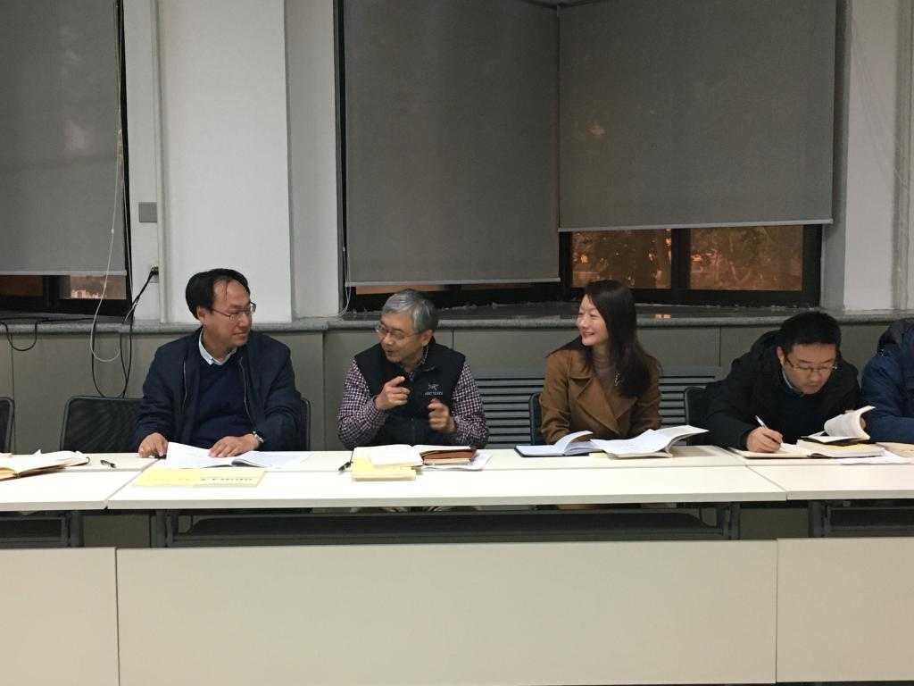

为了进一步推动“不忘初心、牢记使命”主题教育活动扎实开展、将此次主题教育活动推向新的更高的阶段，10月25日下午，人工智能学院教工党支部在科学馆315会议室召开了“不忘初心、牢记使命”主题教育阶段检查暨下阶段学习动员会议。电信学部党委书记梁莉、副书记史锋以及人工智能学院全体教工党员参加了会议，会议由学院教工党支部书记魏平主持。

自9月中旬学校启动“不忘初心、牢记使命”主题教育活动以来，人工智能学院教工党支部在学校党委和电信学部党委的领导下，扎实、有效地开展了一系列活动，包括重温经典、向贫困地区捐款、主题活动、问题调研等。这些活动的开展使党员老师们对“不忘初心、牢记使命”精神内涵有了更深层次的理解和体会。如何对前面的活动进行总结分析、如何将下一阶段的教育活动推向新高度正是本次支部会议召开的主题。会议分为三个部分，一是主题精神的再理解，二是经典领读与分享，三是问题检视与建议。
在“主题精神的再理解”部分，魏平同志介绍了“不忘初心、牢记使命”主题教育的背景，和全体与会党员深入学习了“初心”和“使命”内涵。他表示，人工智能学院教工党支部坚持 “理论”和“实践”并举，在组织建设、理论学习和行动实践等方面开展了一系列工作来践行“初心”和“使命”。
在“经典领读与分享”部分，各位教工党员深入交流了学习《习近平关于“不忘初心、牢记使命”论述摘编》、《中国共产党简史》、《马克思主义哲学十讲》等经典文献的心得。郑南宁教授、刘跃虎教授、王飞教授、孙宏滨教授、薛建儒教授、兰旭光教授等党员老师先后带领参会党员重读、重温、再领会了这些经典，并分享了他们各自的学习体会和感想。郑南宁教授带领大家学习了习近平总书记关于共产党人的奋斗目标的论述。他结合大学教师党员的责任和义务谈到，教育战线的党员应该牢记共产党人的奋斗目标，不忘奋斗初心、坚持奋斗使命，具体到每个教师的日常工作中就是要以学生为本、以教书育人为本，为党和国家培养优秀的人才。其他领读老师分别从教师党员的责任、科技报国、学以致用、加强学习、把论文写在祖国的大地上等各个方面分享了学习的心得与感想。
在“问题检视与建议”部分，各位教师党员以“守初心、担使命，找差距、抓落实”为指导，梳理出问题清单与整改方案，讨论了下一阶段的工作安排和重点，氛围热烈、气氛活跃。
最后，史锋副书记对全体教工党员进行了纪律教育，他强调各位党员在科研和教学活动中要严格遵守纪律和规定。梁莉书记对本次会议进行了总结，她肯定了人工智能学院教工党支部的工作，希望支部进一步推进各项工作的开展，力争做好学部的示范支部。她强调教工党员应抓好人才培养工作，为党、为国育才，并把“初心”和“使命”的精神内涵落实到具体的工作实践中。她指出要坚持问题导向，刀口向内，细化问题梳理与总结，将此次主题教育活动推上更高的阶段。
通过此次主题教育会议，人工智能学院全体教工党员对“不忘初心、牢记使命”主题精神有了更深的理解，对下一阶段工作也有了更进一步的认识，对如何检视问题、整改问题有了更清晰的方法。人工智能学院教工党支部必将进一步坚决贯彻和学习总书记“不忘初心、牢记使命”主题教育重要讲话精神和论述，在学校和学部党委的领导下将支部的各项工作推向新阶段。